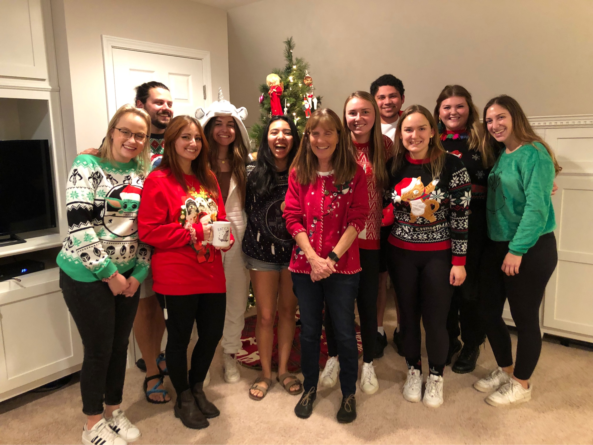

We are a team of 8 undergraduate Psychology students led by graduate student Chelsea Robbins and Professor Robin Kowalski with a passion for research in social psychology.
Our research generally falls in the realm of social psychology, occasionally reaching into and integrating other psychological and non-psychological fields such as clinical psychology, public health, and even computer science.
| April 6-8, 2022: | Two of our studies will be presented at the Clemson FOCI and CSRF Colloquiums. |
| March 23-26, 2022: | We will be presenting two posters at SEPA 2022 on Perceptions and Prevention of Mass/School Shootings. |
| February 2022: | Our paper on Protection Motivation Theory and Mask Mandates is under review with the Journal of Social Psychology. |